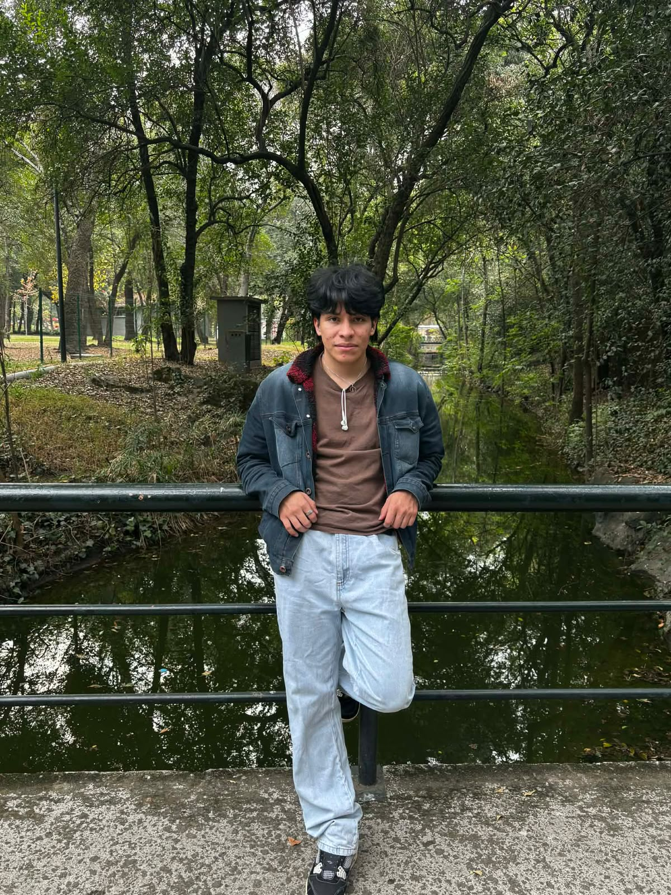

Valores y objetivos
Texto de ejemplo
Equipo

Brian E. Pineda Martinez
@Bri-idkDesarrollador y consultor del proyecto.
JavaHTMLCSSBootstrapJavaScript
Brian E. Pineda Martinez
@Bri-idkDesarrollador y consultor del proyecto.
JavaHTMLCSSBootstrapJavaScript